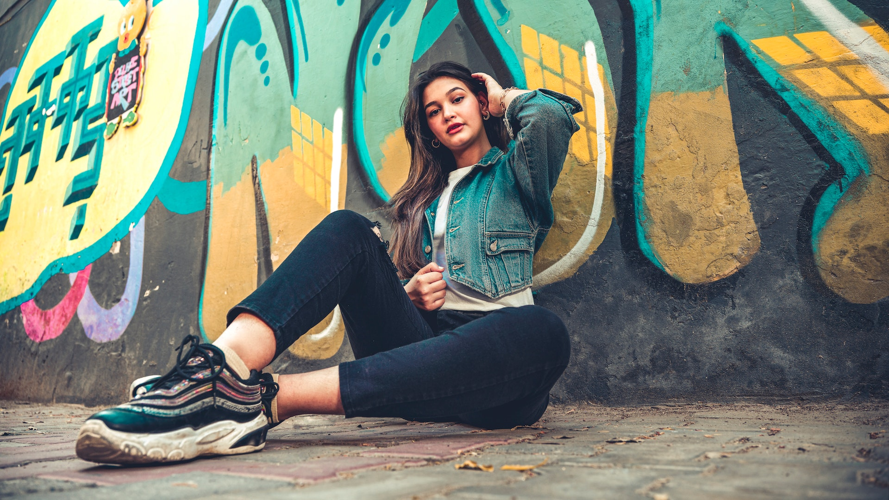

Hey, I'm Oliver.
I am a street art and event
photographer based in Brooklyn
NYC. I put my passion for visual
storytelling to the service of the
people across unique urban places



Street Art
Original street art photography centered on genuine emotions
Real customer connection
Unique memories in orginal urban environment

Wedding
Beautiful, emotive and contemporary wedding
Focus on what really matters
Make your memories last forever

236 E 28TH ST APT 3B
BROOKLYN NY 11226-7726
USA
olivier.boyd@gmail.com
(716)224-9102